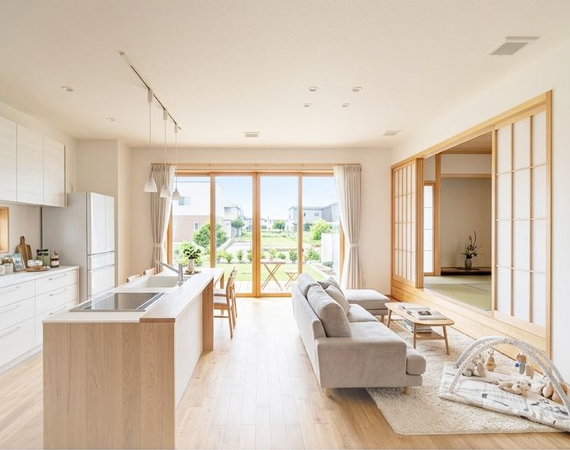
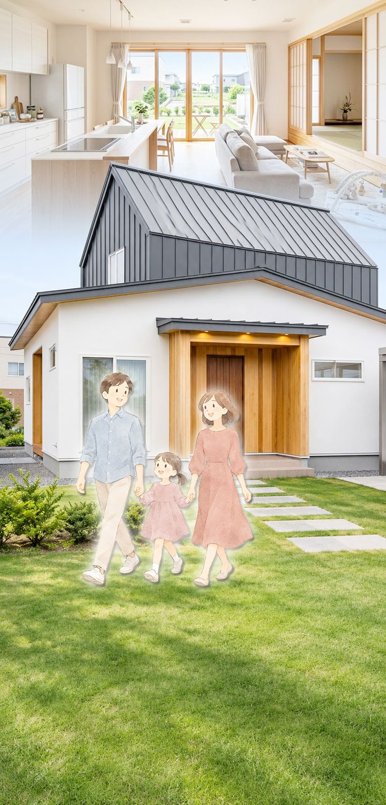
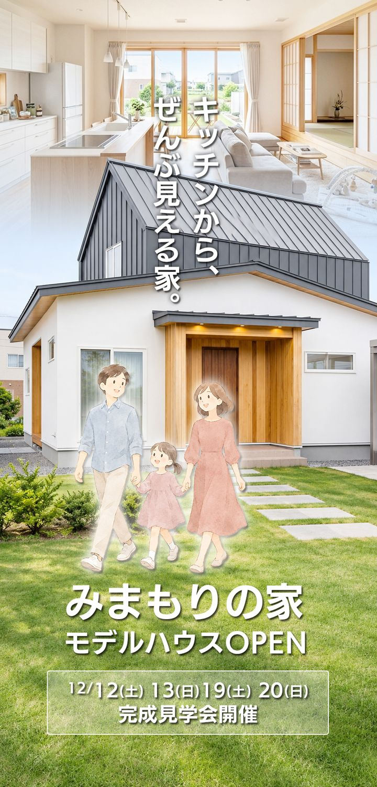
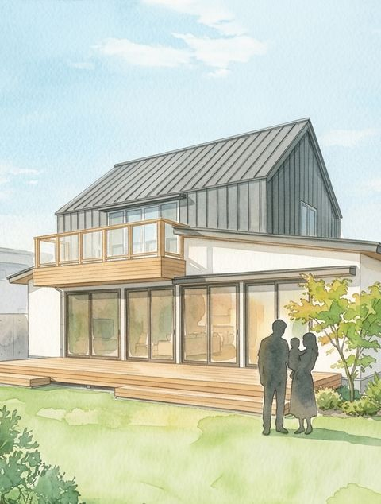
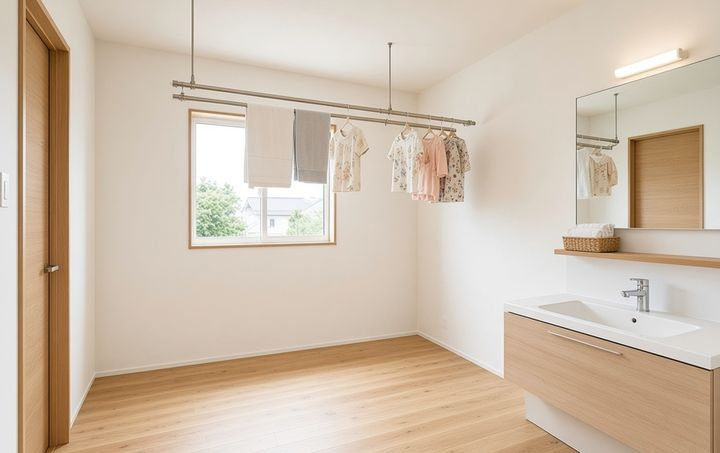
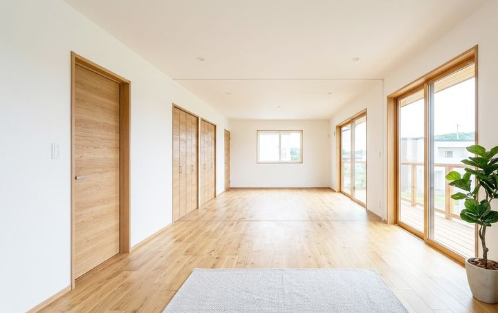

キッチンから、
ぜんぶ見える。
家事の中心にいる時間がいちばん長いのは、キッチンかもしれません。みまもりの家は、南北にのびるペニンシュラキッチンを暮らしの真ん中に置き、リビングも、和室も、デッキで遊ぶ子どもの姿も、火を止めずに見渡せるように設計しました。


子どもの声が、いつも届く日常。
12/12(土) 13(日) 19(土) 20(日)
完成見学会開催
キッチンから、ぜんぶ見える。
MODEL HOUSE OPEN
「キッチンから、ぜんぶ見える家」
新潟市中央区美沢台に、つむぐホームのモデルハウス「みまもりの家」がOPEN
| 会場 | つむぐホーム モデルハウス「みまもりの家」 新潟市中央区美沢台2丁目123-4 |
|---|---|
| 開催日 | 2026年12月12日(土)・13日(日) 19日(土)・20日(日) |
| 時間 | 10:00〜17:00（最終受付16:30）ご案内開始：10:00〜／11:00〜／12:00〜／13:00〜／14:00〜／15:00〜／16:00〜／16:30〜 |
| アクセス | JR美沢台駅から徒歩10分／駐車場2台詳しい道順 |
| 備考 | ご予約優先（ご予約なしでもご参加いただけます）。見学無料・お子様連れ歓迎。室内の撮影はご遠慮ください。 |
ご予約のうえご来場で、QUOカード500円分をプレゼント
事前予約の方限定の特典です。お子さま連れも大歓迎。
WEB・お電話で受付中（前日まで）
POINT
図面だけでは伝わらない3つを、現地でご案内します。
おもちゃを広げても、そのままお昼寝しても。引き戸を閉めれば客間にもなる、家族のもうひとつの居場所です。
雪の日も梅雨の日も頼れる室内干しスペースと、キッチンから続く回遊の家事動線。
造作カウンターと可動間仕切りで、家族の成長に合わせて姿を変える一室。仕切りを動かす体験は、ぜひ現地で。

PHOTO

家事の中心にいる時間がいちばん長いのは、キッチンかもしれません。みまもりの家は、南北にのびるペニンシュラキッチンを暮らしの真ん中に置き、リビングも、和室も、デッキで遊ぶ子どもの姿も、火を止めずに見渡せるように設計しました。
調理の手を止めずに家族と目が合う回遊動線。実際の見え方は、キッチンに立ってお確かめください。
引き戸を開ければリビングとひとつながり。遊び場にも、お昼寝にも、客間にも。

雪の日も梅雨の日も頼れる室内干しスペースと、キッチンから続く回遊の家事動線。

2階には、家族のかたちに合わせて姿を変える12帖の子供部屋。ふたりのワークルームから始まり、やがて2つの個室へ。当日は設計担当が、間取りに込めた意図をご案内します。
さあ、玄関から中へ。
WEB見学
気になるお部屋をタップすると、詳しくご覧いただけます。
家事動線見守り視線2Fに表示する動線はありません
3D模型を読み込み中…
※間取りは概略図・イメージ模型です。詳細は現地でご覧ください。
SPEC
雪国の暮らしを見つめてきた設計。断熱・耐震・素材・設備のポイントをまとめました。
落雪に配慮した屋根形状、風除室、耐雪カーポート。数値や仕様の詳細は、会場で係員がご説明します。
※詳しい仕様書・図面集は会場でお配りしています。
MERIT
実際に見ることで分かることがあります。
実際の見え方は、キッチンに立ってお確かめください。
可変12帖の子供部屋の仕切りを動かす体験は、現地で（間仕切りは当日動かせます）。
当日は設計担当が、間取りに込めた意図をご案内します。数値や仕様の詳細は係員がご説明します。
詳しい仕様書・図面集は会場でお配りしています。
ご予約のうえご来場で、QUOカード500円分をプレゼント
事前予約の方限定の特典です。お子さま連れも大歓迎。
WEB・お電話で受付中（前日まで）
※ご来場の皆さまへの配慮のため、室内の撮影はご遠慮ください。
※混雑時はお待ちいただく場合があります。
同時開催
スマートホーム説明会
スマートフォン等から遠隔操作や自動化によって、暮らしの利便性や快適性を高める仕組みをご紹介。
FAQ
はい、ご予約なしでもご参加いただけます。ご予約の方を優先してご案内しますので、WEBまたはお電話でのご予約がおすすめです（前日まで受付）。
お子様連れ歓迎です。見学は無料です。
ご見学は30分ほどから、現地スタッフがご案内します。
駐車場は2台分です（バリアフリー優先駐車場あり）。満車の際は係員の誘導に従ってください。
ご来場の皆さまへの配慮のため、室内の撮影はご遠慮ください。仕様書・図面集は会場でお配りしています。
ご予約のうえご来場いただいた方に、QUOカード500円分をプレゼントします。
ACCESS
会場：つむぐホーム モデルハウス「みまもりの家」
新潟市中央区美沢台2丁目123-4

※現地には旗を立ててご案内しています。ご不明な場合はお気軽にお電話ください。
RESERVATION
ご予約のうえご来場で、QUOカード500円分をプレゼント
事前予約の方限定の特典です。お子さま連れも大歓迎。
WEB・お電話で受付中（前日まで）
前日までご予約を受け付けています。ご予約なしでもご参加いただけます。
お電話でのご予約：TEL 025-211-3233（受付 10:00〜17:00）